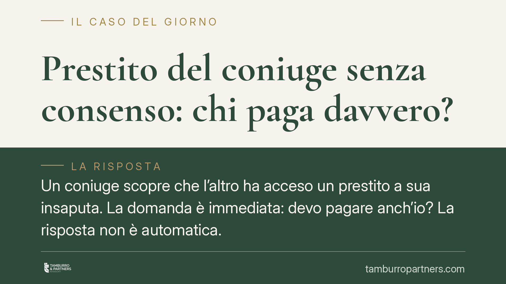

Prestito del coniuge senza consenso: chi paga davvero?
Un coniuge scopre che l'altro ha acceso un prestito a sua insaputa. La domanda è immediata: devo pagare anch'io? La risposta non è automatica. Dipende da due elementi: il regime patrimoniale della coppia e la natura del debito, personale oppure contratto nell'interesse della famiglia. Vediamo cosa dice la legge e cosa fare.

Il principio di partenza: il contratto vincola chi lo firma
Il punto di partenza è l'art. 1372 del Codice civile: il contratto ha forza di legge tra le parti che lo stipulano. In pratica, chi firma un prestito assume l'obbligo di restituirlo. Il coniuge che non ha firmato nulla, in linea di principio, non è parte del rapporto e non risponde di quel debito con il proprio patrimonio personale.
A questo si aggiunge l'art. 2740 c.c., secondo cui ciascuno risponde delle proprie obbligazioni con tutti i suoi beni, presenti e futuri. La responsabilità patrimoniale segue chi ha assunto l'obbligo, non il coniuge in quanto tale. Il matrimonio, da solo, non trasforma i debiti di uno in debiti dell'altro.
Perché il regime patrimoniale cambia tutto
La risposta si articola quando i coniugi sono in comunione dei beni. Qui non cambia il principio della responsabilità personale, ma cambia ciò che il creditore può aggredire.
Occorre distinguere due categorie di debito.
Debito contratto nell'interesse della famiglia. L'art. 186, lett. c), c.c. stabilisce che i beni della comunione rispondono delle obbligazioni contratte per i bisogni della famiglia, anche separatamente da uno solo dei coniugi. È il caso del prestito per l'acquisto dell'auto usata da entrambi, per le spese scolastiche dei figli, per lavori sulla casa familiare. Qui i beni comuni rispondono, a prescindere da chi abbia firmato, perché il debito serve la famiglia.
Debito personale. Diverso è il prestito che serve interessi esclusivi di un solo coniuge: una spesa voluttuaria propria, un investimento personale, un debito di gioco. In questo caso opera l'art. 189 c.c.: i creditori particolari del coniuge, se i beni personali del debitore sono insufficienti, possono soddisfarsi in via sussidiaria anche sui beni della comunione, ma solo nei limiti del valore della quota spettante al coniuge obbligato. Non oltre.
È una precisazione decisiva. Aggredire i beni comuni fino al valore della quota del debitore non significa rendere il coniuge non firmatario personalmente obbligato. Il suo patrimonio personale resta al riparo; ciò che può essere intaccato è la parte di ricchezza comune corrispondente alla quota di chi il debito lo ha contratto.
In regime di separazione dei beni la questione è più lineare: ciascuno risponde con i propri beni, non esistono beni comuni da aggredire e il coniuge estraneo al contratto resta indenne, salvo che abbia prestato garanzia (per esempio come fideiussore).
Cosa cambia nella pratica
La giurisprudenza di legittimità e di merito conferma questa impostazione: il criterio guida è la destinazione del debito. Un prestito acceso senza informare l'altro coniuge non è di per sé un debito familiare: la finalità va accertata in concreto.
Per il coniuge che scopre il prestito, questo significa che:
- se il regime è di separazione e non ha firmato né garantito, non deve nulla;
- se il regime è di comunione e il debito è personale dell'altro, il suo patrimonio personale è protetto e i beni comuni rispondono solo entro la quota del debitore;
- se il debito è stato contratto per i bisogni della famiglia, i beni comuni rispondono a prescindere dalla firma.
Attenzione al ruolo di garante: se si è firmata una fideiussione o si è co-intestato il finanziamento, la posizione cambia radicalmente e la responsabilità diventa diretta.
Cosa fare in concreto
- Verificate il regime patrimoniale. Controllate l'atto di matrimonio o l'eventuale convenzione: comunione o separazione fanno una differenza sostanziale.
- Procuratevi il contratto di prestito. Leggete chi ha firmato, se esistono garanti o co-obbligati e per quale finalità dichiarata è stato erogato.
- Ricostruite la destinazione del denaro. Documentate se le somme sono servite a bisogni familiari o a esigenze personali dell'altro coniuge: è l'elemento su cui si gioca la responsabilità dei beni comuni.
- Non firmate nulla d'impulso su richiesta della banca o della società di recupero crediti prima di aver chiarito la vostra posizione.
- Rivolgetevi a un legale se ricevete solleciti o atti esecutivi: consigliamo di far valutare l'aggredibilità dei beni prima che le procedure avanzino.
La regola da tenere a mente è semplice: il matrimonio non è una firma in bianco sui debiti dell'altro. Ma il regime patrimoniale e la finalità del prestito possono estendere le conseguenze oltre chi ha materialmente contratto l'obbligo.
---
Contributo informativo a cura di Tamburro & Partners - Avv. Giuseppe Tamburro. Non costituisce parere legale.
Ogni famiglia ha il suo equilibrio.
Separazione, divorzio, affidamento, assegno: se vuoi un confronto riservato su una specifica situazione, scrivi allo studio. Ti rispondiamo entro un giorno lavorativo.